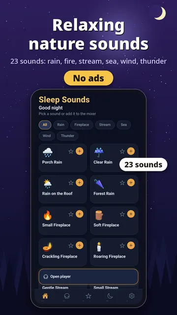

Dream Builder Apps · Sleep Sounds
Offline rain sounds for sleeping
Most “rain sounds for sleeping” are long videos. They need a connection, and an ad can start in the middle of the night. If you want rain that still plays when the Wi-Fi drops — on a plane, a train or at a cabin — the sounds have to live on your phone.
That is what offline rain sounds means here. In Sleep Sounds – Restful Night the recordings are built into the app, so they play without the internet. You can lock the screen and the rain keeps going. There are no ads.


Why people look for rain without Wi-Fi
Streaming is fine at home when the connection is steady. It is less useful when you put the phone in airplane mode, when hotel or train Wi-Fi is weak, or when you do not want a video running all night and lighting up the screen. A lot of people also search for “rain sounds for sleeping no ads” after a clip has woken them.
A sleep-sounds app avoids those problems if every sound is stored on the device. You do not download a track each night, and you do not need an account.
What you can listen to
Sleep Sounds includes four rain recordings, among 23 nature sounds in all. The rain group covers rain on a porch, on a roof and in a forest, so you can choose a steady indoor rain or a more open, outdoor one. If you want a fuller night sound, you can mix rain with thunder, wind, a stream or ocean waves — up to five sounds at once — and set the volume of each one. Favorites save the mix, including the volumes, so you can return to it with one tap.
The rain can run until you stop it, or you can set a sleep timer of up to 12 hours. The timer ends with a gentle fade-out, and you choose how long that fade lasts (from 30 seconds to five minutes). Play and pause also work from the lock screen, so you do not have to unlock the phone in the dark.
If you specifically want the sound of rain on a roof, there is a separate page about rain on a roof sleep sounds.
A calm background, not a medical treatment
Sleep Sounds is not a medical app, and it does not treat sleep disorders. Rain is simply a steady background that some people prefer to a silent room, and that can make sudden noises stand out a little less. Keep the volume comfortable — loud sound all night is not the aim. The same sounds can also sit quietly in the background while you read or wind down.
If the problem is a neighbor or a snoring partner, masking has limits. There is more on how to sleep with noisy neighbors using nature sounds and on sleep sounds to drown out a snoring partner. For the wider picture — earplugs, the room itself, and talking to a neighbor — see how to sleep in a noisy apartment.
Try the app
Sleep Sounds was first built for personal use, by someone who is sensitive to noise at night. It is a small Android app with no ads, no tracking and no account. A 7-day free trial starts on first launch; every feature is available, and you do not have to enter payment details. The trial does not turn into a paid subscription on its own. After that you can continue with a monthly subscription in Google Play, at the price shown before you subscribe.
Made in Finland.
7 days free, then a monthly subscription. Sleep Sounds – Restful Night, on Android.